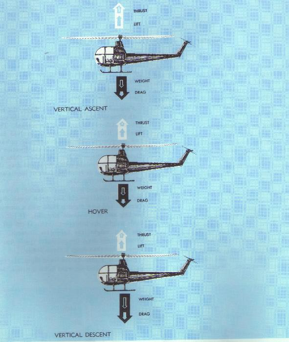

{kind=link}
{kind=link}
{kind=link}
{kind=link}
{kind=link}
{kind=link}
{kind=link}
{kind=link}

Figure 17.- Blade coning is a result of
lift and centrifugal force.
POWERED FLIGHT
In any kind of flight (hovering, vertical, forward, sideward, or rearward), the total lift and thrust forces of a rotor are perpendicular to the tip-path plane or plane of rotation of the rotor (fig. 9). The tip-path plane is the imaginary circular plane outlined by the rotor blade tips in making a cycle of rotation.
Figure 9.- The total lift-thrust force acts
perpendicular to the rotor disc or tip-path plane.
Forces acting on the helicopter
During any kind of horizontal or vertical flight,
there are four forces acting on the helicopter--lift, thrust, weight,
and drag. Lift is the force required to support the weight of the
helicopter. Thrust is the force required to overcome the drag on the
fuselage and other helicopter components.
Hovering flight.- During hovering flight in a no-wind condition, the tip-path plane is horizontal, that is, parallel to the ground. Lift and thrust act straight up; weight and drag act straight down. The sum of the lift and thrust must equal the sum of the weight and drag forces in order for the helicopter to hover.

Figure 10.- Forces acting on the helicopter during a
hover and vertical flight.
Vertical flight.- During vertical flight in a no-wind condition, the lift and thrust forces both act vertically upward. Weight and drag both act vertically downward. When lift and thrust equal weight and drag, the helicopter hovers; if lift and thrust are less than weight and drag, the helicopter descends vertically; if lift and thrust are greater than weight and drag, the helicopter rises vertically (fig. 10).
Forward flight.-
For forward flight, the tip-path plane is tilted
forward, thus tilting the total lift-thrust force forward from the vertical.
This resultant lift-thrust force can be resolved into two components--lift
acting vertically upward and thrust acting horizontally in the direction
of flight. In addition to lift and thrust, there are weight, the downward
acting force, and drag, the rearward acting or retarding force of inertia
and wind resistance (fig. 11).
In straight-and-level unaccelerated forward flight,
lift equals weight and thrust equals drag (straight-and-level flight is
flight with a constant heading and at a constant altitude). If lift
exceeds weight, the helicopter climbs; if lift less than weight, the
helicopter descends. If thrust exceeds drag, the helicopter speeds up;
if thrust is less than drag, it slows down.
Figure 11.- Forces acting on the helicopter during
forward, sideward, and rearward flight.
Sideward flight.- In sideward flight, the tip-path plane is tilted sideward in the direction that flight is desired thus the total lift-thrust vector sideward. In this case, the vertical or lift component is still straight up, weight straight down, but the horizontal or thrust component now acts sideward with drag acting to the opposite side (fig. 11).
Rearward flight.- For rearward flight, the tip-path plane is tilted rearward tilting the lift-thrust vector rearward. The thrust component is rearward and drag forward, just the opposite to forward flight. The lift component is straight up and weight straight down (fig. 11).
Torque.- Newton's third law of motion states, "To every action there is an equal and opposite reaction." As the main rotor of a helicopter turns in one direction, the fuselage tends to rotate in the opposite direction (fig. 12). This tendency for the fuselage to rotate is called torque. Since torque effect on the fuselage is a direct result of engine power supplied to the main rotor, any change in engine power brings about a corresponding change in torque effect. The greater the engine power, the greater the torque effect. Since there is no engine power being supplied to the main rotor during autorotation, there is no torque reaction during autorotation.
Figure 12.- Tail rotor thrust compensates for
the torque effect of the main rotor.
Auxiliary rotor.- The force that compensates for torque and keeps the fuselage from turning in the direction opposite to the main rotor is produced by means of an auxiliary rotor located on the end of the tail boom. This auxiliary rotor, generally referred to as a tail rotor, or antitorque rotor, produces thrust in the direction opposite to torque reaction developed by the main rotor (fig. 12). Foot pedals in the cockpit permit the pilot to increase or decrease tail-rotor thrust, as needed, to neutralize torque effect.
Gyroscopic precession.- The spinning main rotor of a helicopter acts like a gyroscope. As such, it has the properties of gyroscopic action, one of which is precession. Gyroscopic precession is the resultant action or deflection of a spinning object when a force is applied to this object. This action occurs approximately 90° in the direction of rotation from the point where the force is applied (fig. 13). Through the use of this principle, the tip-path plane of the main rotor may be tilted from the horizontal.
Figure 13.- Gyroscopic Precession Principle:
When a force is applied to a spinning gyro, the maximum
reaction occurs 90° later in the direction of rotation.
The movement of the cyclic pitch control in a two-bladed rotor system increases the angle of attack of one rotor blade with the result that a greater lifting force is applied at this point in the plane of rotation. This same control movement simultaneously decreases the angle of attack of the other blade a like amount, thus decreasing the lifting force applied at this point in the plane of rotation. The blade with the increased angle of attack tends to rise; the blade with the decreased angle of attack tends to lower. However, because of the gyroscopic precession property, the blades do not rise or lower to maximum deflection until a point approximately 90° later in the plane of rotation. In the illustration (fig. 14), the retreating blade angle of attack is increased and the advancing blade angle of attack is decreased resulting in a tipping forward of the tip-path plane, since maximum deflection takes place 90° later when the blades are at the rear and front respectively.
Figure 14.- Rotor disc acts like a gyro. When
a rotor blade pitch change is made, maximum reaction occurs
approximately 90° later in the direction of rotation.
In a three-bladed rotor, the movement of the cyclic pitch control changes the angle of attack of each blade an appropriate amount so that the end result is the same--a tipping forward of the tip-path plane when the maximum change in angle of attack is made as each blade passes the same points at which the maximum increase and decrease are made in the illustration (fig. 14) for the two-bladed rotor. As each blade passes the 90° position on the left, the maximum increase in angle of attack occurs. As each blade passes the 90° position to the right, the maximum decrease in angle of attack occurs. Maximum deflection takes place 90° later--maximum upward deflection at the rear and maximum downward deflection at the front--and the tip-path plane tips forward.
Dissymmetry of lift.-
The area within the tip-path plane of the
main rotor is know as the disc area or rotor disc. When hovering
in still air, lift created by the rotor blades at all corresponding
positions around the rotor disc is equal. Dissymmerty of lift is created
by horizontal flight or by wind during hovering flight, and is the
difference in lift that exists between the advancing blade half of the
disc area and the retreating blade half.
At normal rotor operating RPM and zero airspeed, the
rotating blade-tip speed of most helicopter main rotors is approximately
400 miles per hour. When hovering in a no-wind condition, the speed of
the relative wind at the blade tip is the same throughout the tip-path
plane (fig. 15, bottom). The speed of
the relative wind at any specific point along the rotor blade will be the
same throughout the tip-path plane; however, the speed is reduced as this
point moves closer to the rotor hub as indicated by the two inner circles.
As the helicopter moves into forward flight, the relative wind moving over
each rotor blade becomes a combination of the rotational speed of the rotor
and the forward movement of the helicopter
(fig. 15, top). At the 90° position on the left side, the retreating
blade speed is the blade velocity less the speed of the helicopter. (In the
illustration, the helicopter is assumed to have a forward airspeed of 100
miles per hour.) In other words, the relative wind speed is at a maximum at
the 90° position on the right side and at a minimum at the 90°
position on the left side.
Figure 15.- Comparison of rotor blade
speeds for the advancing blade and the retreating blade
during hovering and forward flight.
Earlier in this handbook, the statement was made that for any given angle of attack, lift increases as the velocity of the airflow over the airfoil increases. It is apparent that the lift over the advancing blade half of the rotor disc will be greater than the lift over the retreating blade half during horizontal flight, or when hovering in a wind unless some compensation is made. The compensation made to equalize the lift over the two halves of the rotor disc is blade flapping and cyclic feathering. (see chapter 5 for more information about feathering)
Figure 16.- Flapping action about the
flapping hinges. Drag hinges can also be seen.
Blade flapping.-
In a three-bladed rotor system, the rotor blades
are attached to the rotor hub by a horizontal hinge which permits the blades
to move in a vertical plane, i.e., flap up or down, as they rotate
(fig. 16). In forward flight and
assuming that the blade-pitch angle remains constant, the increased lift on
the advancing blade will cause the angle of attack because the relative wind
will change from a horizontal direction to more of a downward direction. The
decreased lift on the retreating blade will cause the blade to flap down
increasing the angle of attack because the relative wind changes from a
horizontal direction to more of an upward direction
(fig. 3). The combination of decreased
angle of attack on the advancing blade and increased angle of attack on the
retreating blade through blade flapping action tends to equalize the lift
over the two halves of the rotor disc.
In a two-bladed system, the blades flap as a unit.
As the advancing blade flaps up due to the increased lift, the retreating
blade flaps down due to the decreased lift. The change in angle of attack
on each blade brought about by this flapping action tends to equalize the
lift over the two halves of the rotor disc.
The position of the cyclic pitch control in forward
flight also causes a decrease in angle of attack on the advancing blade
and an increase in angle of attack on the retreating blade. this, together
with blade flapping, equalizes lift over the two halves of the rotor disc.
Coning.- Coning is the upward bending of the blades caused by the combined forces of lift and centrifugal force. Before takeoff, the blades rotate in a plane nearly perpendicular to the rotor mast, since centrifugal force is the major force acting on them (fig. 17).
Figure 17.- Blade coning is a result of
lift and centrifugal force.
Axis of rotation.- The axis of rotation of a helicopter rotor is the imaginary line about which the rotor rotates. It is represented by a line drawn through the center of, and perpendicular to, the tip-path plane. It is not to be confused with the rotor mast. The only time the rotor axis of rotation coincides with the rotor mast is when the tip-path plane is perpendicular to the rotor mast (fig. 18).
Figure 18.- The axis of rotation is
the imaginary line about which the rotor rotates and is
perpendicular to the tip-path plane.
Coriolis effect.- When a rotor blade of a three-bladed rotor system flaps upward, the center of mass of that blade moves closer to the axis of rotation and blade acceleration takes place. Conversely, when that blade flaps downward, its center of mass moves further from the axis of rotation and blade deceleration takes place (fig. 19). (Keep in mind, that due to coning, the rotor blade will not flap below a plane passing through the rotor hub and perpendicular to the axis of rotation.) The acceleration and deceleration actions (often referred to as leading, lagging, or hunting) of the rotor blades are absorbed by either dampers or the blade structure itself, depending upon the design of the rotor system.
Figure 19.-Coriolis effect is the change in blade velocity
to compensate for the change in distance of the center
of mass from the axis of rotation as the blades flap.
Two-bladed rotor systems are normally subject to
CORIOLIS EFFECT to a much lesser degree than are three-bladed systems
since the blades are generally "underslung" with respect to the
rotor hub, and the change in the distance of the center of mass from the
axis of rotation is small. The hunting action is absorbed by the blades
through bending. If a two-bladed rotor system is not "underslung,"
it will be subject to CORIOLIS EFFECT comparable to that of a fully
articulated system.
CORIOLIS EFFECT might be compared to spinning skaters.
When they extend their arms, their rotation slows down because their center
of mass moves farther from their axis of rotation. When their arms are
retracted, their rotation speeds up because their center of mass moves
closer to their axis of rotation.
The tendency of a rotor blade to increase or decrease
its velocity in its plane of rotation due to mass movement is known as
CORIOLIS EFFECT, named for the mathematician who made studies of forces
generated by radial movements of mass on a rotating disc.
Translating tendency or drift.- The entire helicopter has a tendency to move in the direction of tail rotor thrust (to the right) when hovering. This movement is often referred to as "drift." To counteract this drift, the rotor mast in some helicopters is rigged slightly to the left side so that the tip-path plane has a built-in tilt to the left, thus producing a small sideward thrust. In other helicopters, drift is overcome by rigging the cyclic pitch system to give the required amount of tilt to the tip-path plane (fig. 20).
Figure 20.- Drift, caused by tail rotor thrust, is
compensated for by rigging the mast or cyclic pitch system
to have a built-in tilt of the tip-path plane to the left.
Ground effect.-
When a helicopter is operated near the surface,
the downwash velocity created by the rotor blades cannot be fully developed
due to the proximity of the surface. This restraint of rotor downwash occurs
as the helicopter reaches a relatively low altitude--usually less than
one rotor diameter above the surface
(fig. 21).
As the downwash velocity is reduced, the induced
angle of attack of each rotor blade is reduced and the lift vector becomes
more vertical. Simultaneously, a reduction in induced drag occurs. In
addition, as the induced angle of attack is reduced, the angle of
attack generating lift is increased. The net result of these actions is
a beneficial increase in lift and a lower power requirement to support
a given weight.
Figure 21.- Ground effect results when the rotor downwash
field is altered from its free air state by the
presence of the surface.
Translational lift.-
Translational lift is that additional lift
obtained when entering horizontal flight, due to the increased efficiency
of the rotor system. The rotor system produces more lift in forward flight
because the higher inflow velocity supplies the rotor disc with a greater
mass of air per unit time upon which to work than it receives while
hovering. Translational lift is present with any horizontal movement
although the increase will not be noticeable until airspeed reaches
approximately 15 miles per hour. The additional lift available at this speed
is referred to as "effective translational lift" and is easily
recognized in actual flight by the increased performance of the helicopter.
Since translational lift depends upon airspeed rather
than groundspeed, the helicopter does not have to be in horizontal flight
to be affected. Translational lift will be present during hovering flight
in a wind--the amount being proportional to the wind velocity--and
effective translational lift will be present when hovering in winds of
15 MPH or more.
Transverse flow effect.- In forward flight, air passing through the rear portion of the rotor disc has a higher downwash velocity than air passing through the forward portion. This is because the air passing through the rear portion has been accelerated for a longer period of time than the air passing through the forward portion. This increased downwash velocity at the rear of the disc decreases the angle of attack and blade lift, hence in combination with gyroscopic precession, causes the rotor disc to tilt to the right (the advancing side). The lift on the forward part of the rotor disc is greater than on the rearward part. According to the principle of gyroscopic precession, maximum deflection of the rotor blades occurs 90° later in the direction of rotation. This means that the rotor blades will reach maximum upward upward deflection on the left side and maximum downward deflection on the right side. This transverse flow effect is responsible for the major portion of the lateral cyclic stick control required to trim the helicopter at low speed.
Pendular action.- Since the fuselage of the helicopter is suspended from a single point and has considerable mass, it is free to oscillate either longitudinally or laterally in the same way as a pendulum (fig, 22). This pendular action can be exaggerated by overcontrolling; therefore, control stick movements should be moderate.
Figure 22.- Since the helicopter is suspended
from the rotor mast head, it acts like a pendulum.
Autorotation is the term used for the flight condition
during which no engine power is supplied and the main rotor is driven only
by the action of the relative wind. It is the means of safely landing a
helicopter after engine failure or certain other emergencies. The
helicopter transmission or power train is designed so that the engine,
when it stops, is automatically disengaged from the main rotor system to
allow the main rotor to rotate freely in its original direction. For
obvious reasons, this autorotational capability is not only a most
desirable characteristic but is indeed a capability required of all
helicopters before FAA certification is granted.
When engine power is being supplied to the main rotor,
the flow of air is downward through the rotor. When engine power is not
being supplied to the main rotor, that is, when the helicopter is in
autorotation, the flow of air is upward through the rotor. It is this
upward flow of air that causes the rotor to continue turning after engine
failure.
The portion of the rotor blade that produces the
forces that cause the rotor to turn when the engine is no longer supplying
power to the rotor is that portion between approximately 25 percent and
70 percent of the radius outward from the center. This portion is often
referred to as the "autorotative or driving region"
(fig. 23). Aerodynamic forces along this
portion of the blade tend to speed up the blade rotation.
The inner 25 percent of the rotor blade, referred to
as the "stall region," operates above its maximum angle of attack
(stall angle), thereby contributing little lift but considerable drag which
tends to slow the blade rotation.
The outer 30 percent of the rotor blade is known as
the "propeller or driven region." Aerodynamic forces here result
in a small drag force which tends to slow the tip portion of the blade.
The aerodynamic regions as described above are for
vertical autorotations. During forward flight autorotations, these
regions are displaced across the rotor disc to the left
(fig. 23).
Figure 23.- Contribution of various portions
of the rotor disc to the maintenance of RPM during an
autorotation--vertical autorotation (left);
forward flight autorotation (right).
Rotor RPM stabilizes when the autorotative forces
(thrust) of the "driving region" and the antiautorotative forces
(drag) of the "driven region" and "stall region" are
equal. Assume that rotor RPM has been increased by entering an updraft; a
general lessening in angle of attack will follow along the entire blade.
This produces a change in aerodynamic force vectors which results in an
overall decrease in the autorotative forces and the rotor tends to slow
down, If rotor RPM has been decreased by entering a downdraft, autorotative
forces will tend to accelerate the rotor back to is equilibrium RPM.
Assuming a constant collective pitch setting, that
is, a constant rotor blade pitch angle, an overall greater angle of attack
of the rotor disc (as in a flare) increases rotor RPM; a lessening in
overall angle of attack (such as "pushing over" into a descent) decreases
rotor RPM.
Forward speed during autorotative descent permits a
pilot to incline the rotor disc rearward, thus causing a flare. The
additional induced lift created by the greater volume of air momentarily
checks forward speed as well as descent. The greater volume of air acting
on the rotor disc will normally increase rotor RPM during the flare. As
the forward speed and descent rate near zero, the upward flow of air has
practically ceased and rotor RPM again decreases; the helicopter settles
at a slightly increased rate but with reduced forward speed. The flare
enables the pilot to make an emergency landing on a definite spot with
little or no landing roll or skid.
{kind=link}
{kind=link}
{kind=link}
{kind=link}
{kind=link}
{kind=link}